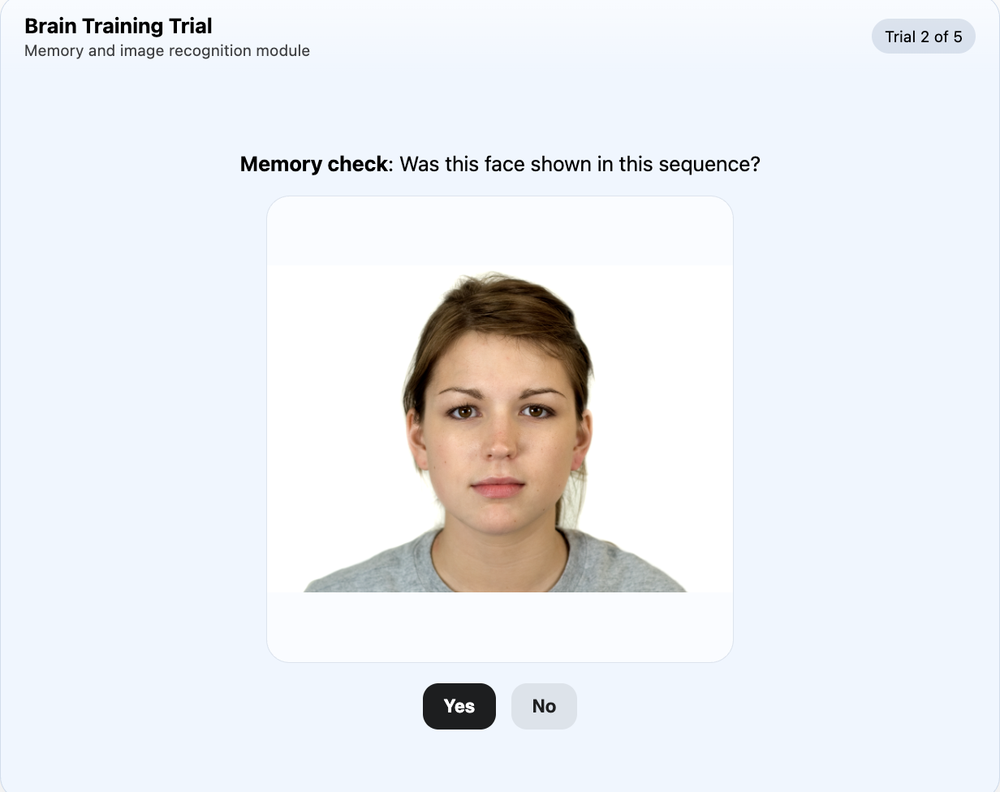

The Relational Costs of Goal-Directed Listening in Workplace Conversations (2026)
When does relational listening feel self-congruent, and under what conditions is it emotionally costly for listeners?
Building on emotional labor theory (Hochschild, 1983), we ask whether assigning relational versus informational listening goals changes listeners’ experience and when those effects depend on goal–person fit.

Mapping Interpersonal Appraisals (Research Beta): A Tool for Conflict Reframing and Relational Insight (2025)
The Relational Response Locus is a web-based reflection tool that helps users reframe relationship challenges by mapping perceived control and responsibility onto a 2×2 grid. Grounded in attribution, coping, and research on conflict reappraisal and self-distancing, it generates alternative perspectives (e.g., step back, speak up) in an attempt to reduce distress and foster wiser reasoning.

Behavorial Tracking Tools for Qualtrics (2025)
This work includes a set of custom JavaScript tools built for Qualtrics surveys, such as a memory game and a keystroke monitor. They capture rich behavioral data including click timing across difficulty levels, accuracy, selected answers, and detailed typing metrics like time to first keystroke, total typing time, backspaces, and paste activity.


Dynamic Content Integration for Qualtrics Surveys (2025)
This project is a dynamic content display system for Qualtrics, built with Python preprocessing and hosted on AWS. It enables randomized images and tables to be embedded into surveys based on participants’ assigned IDs and experimental conditions. The pipeline has supported a few research studies at Kellogg!


The 20 Day Challenge: Mindfulness Training for Conflict-Resilient Teams (2024)
This original program introduces daily, science-based mindfulness exercises. The training integrates structured journaling, breathwork, and media visualization techniques. Designed for social workers, the program is delivered entirely in the workplace to support real-time integration into daily routines. It uses printed, individually guided materials with no apps or facilitators required, making it an accessible introduction for all ages. Exercises are under 10 minutes and tailored to the emotional demands of conflict-heavy roles.

Mindfulness Matters: Fostering Conflict Resilient Teams (2024)
How does participation in an original workplace mindfulness training program influence team effectiveness and conflict resilience among social workers?
For my senior thesis, I designed, administered, and evaluated a 20-day mindfulness intervention at a small nonprofit. The program included daily exercises adapted from foundational texts—such as Mindfulness for a More Creative Life (Penman, 2015), Living in Balance (Levey, 2014), Nonviolent Communication (Rosenberg, 2015), and 4 Essential Keys to Effective Communication (Leal, 2017)—and was tailored to support self-awareness and conflict-resilient communication. Pre- and post-intervention data suggested improvements in team functioning, key mindfulness facets, and a reduction in conflict avoidance behaviors.

Efficient Data Filtering and Visualization for Research Studies (2024)
Built a tool for preprocessing and managing participant data used in research studies. The script interfaces with a SQL database to apply inclusion criteria and updates the database with the filtered dataset. I use this tool in my research roles to update participant pools, streamline data queries, enter new records, and visualize existing datasets through an integrated GUI.